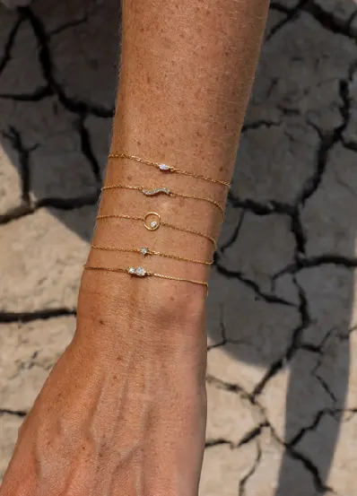
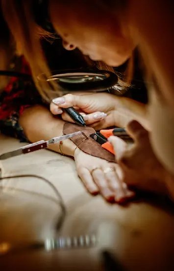
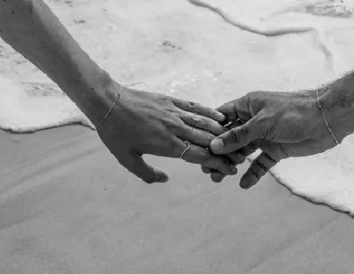
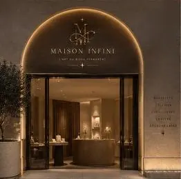

L'art du bijou permanent
Plus qu'un bijou, une histoire sans fin
Un bracelet, une bague ou un collier en or 18 carats, soudé directement sur vous au laser. Sans fermoir : il ne se perd pas, ne se casse pas, et ne s'oublie pas.

- Or 18 caratsdont de l'or recyclé
- Garantie à vieun bijou conçu pour durer
- Diamants certifiésrapport gemmologique fourni
- Soudure laserréalisée devant vous
Les collections
Des pièces discrètes, élégantes et intemporelles, pour s'offrir un souvenir ou l'offrir à quelqu'un.

Une expérience intime
Le rituel en trois temps
Ce n'est pas un achat de bijouterie classique : c'est un moment pendant lequel le bijou prend son sens.
Choisir
Une chaîne en or 18 carats ou un modèle serti de diamant, puis l'emplacement : poignet, cheville, doigt ou cou.
Souder
Sous vos yeux, la micro-soudure laser ferme le bijou en une étincelle.
Garder
Une gravure personnalisée est possible sur place. Le bijou est garanti à vie.

Un lien à célébrer
Une promesse faite à soi-même, un lien entre amies, un souvenir de couple : chaque bijou est ancré dans un moment.
À deux
Fiançailles, anniversaires, engagement : un symbole visible, sans tatouage.
Entre amies
Sœurs, EVJF, amitiés : un souvenir partagé.
Pour soi
Un nouveau départ, une réussite : une promesse à porter chaque jour.
Modèles et tarifs
| Modèle | Matière | À partir de |
|---|---|---|
| Bracelet Aria (extra fin à midi) | Chaîne en or | 150 € |
| Bracelet Cléo (mini et midi) | Chaîne en or | 240 € |
| Bracelet Luce (mini et midi) | Or jaune, rose ou champagne 18 K | 250 € |
| Bracelet Romy (mini) | Chaîne en or | 250 € |
| Bracelets maxi (Rio, Luce, Cléo) | Or jaune ou gris 18 K | 390 € |
| Bracelets diamant de laboratoire | Or et diamant | 220 € |
| Bracelets diamant naturel | Or et diamant | 290 € |
| Bague chaîne Stellar | Or jaune ou gris 18 K | 350 € |

Laval, centre-ville
Un atelier, pas un magasin
On n'entre pas dans un magasin de bijoux, on entre dans un atelier de création : lumière chaude, musique douce, fragrance de bois blanc et de fleur d'oranger. Vous manipulez les chaînes et choisissez le placement exact.
- Poinçon de garantie et poinçon de maître.
- Facture indiquant la provenance de l'or ou du diamant, rapport gemmologique pour chaque diamant.
- Or recyclé, pochons en lin et boîtes certifiées FSC.
Prendre rendez-vous
Offrez-vous ou offrez un moment unique, seul(e), à deux ou entre amies. Écrivez-nous pour réserver votre créneau en boutique.